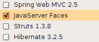
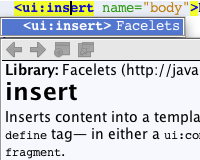
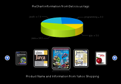
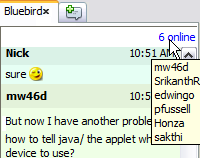
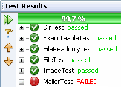
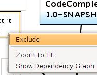
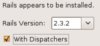
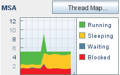
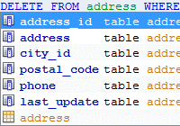

NetBeans IDE es un reconocido entorno de desarrollo integrado disponible para Windows, Mac, Linux y Solaris. El proyecto de NetBeans está formado por un IDE de código abierto y una plataforma de aplicación que permite a los desarrolladores crear con rapidez aplicaciones web, empresariales, de escritorio y móviles utilizando la plataforma Java, así como JavaFX, PHP, JavaScript y Ajax, Ruby y Ruby on Rails, Groovy and Grails y C/C++.
NetBeans IDE 6.8 es el primer IDE en ofrecer compatibilidad para todas las especificaciones de Java EE 6, con compatibilidad mejorada para JSF 2.0/Facelets, Java Persistence 2.0, EJB 3.1 (incluido el uso de EJB en aplicaciones web), servicios web RESTful y GlassFish v3. También lo recomendamos para desarrollar con el último JavaFX SDK 1.2.1 y para crear aplicaciones web PHP con la nueva versión PHP 5.3 o con la estructura Symfony.
Utilice los siguientes documentos para empezar a utilizar NetBeans IDE 6.8.
|
Java Enterprise Edition 6
- Proyectos web con Java EE 6 y perfiles web de Java EE, EJB en aplicaciones web
- Compatibilidad con EJB 3.1, el asistente de archivos de proyecto EJB también admite el tipo de sesión Singleton
- Servicios web RESTful (JAX-RS 1.1), servicios web GlassFish Metro 2.0 (JAX-WS 2.2), JAXB 2.2
- Implementación, depuración y creación de perfiles de Java Persistence JPA 2.0 con el servidor de aplicaciones GlassFish v3
|

|
|
Proyectos web con JavaServer Faces 2.0 (Facelets)
- Finalización de código, sugerencias sobre errores, finalización de espacio de nombre, ventanas emergentes de documentación e importación automática de indicadores para Facelets
- Compatibilidad del editor con bibliotecas de Facelets, componentes compuestos, lenguaje de expresiones, generadores de formularios JSF y HTML incluidos.
- La paleta de componentes de JSF personalizable genera formularios de JSF y tablas de datos de JSF a partir de entidades
- El asistente de archivo nuevo genera páginas JSF CRUD (crear/leer/actualizar/eliminar) a partir de entidades
- Uso más extendido de las anotaciones en lugar de los descriptores de implementación
|

|
|
JavaFX
- Mayor compatibilidad con la versión JavaFX SDK 1.2.1
- Finalización de código mejorada
- Sugerencias sobre el editor: Reparar importaciones, Encerrar con, Implementar métodos abstractos, etc.
- Navegación mejorada: Hipervínculos, Ir al tipo, Buscar dónde se usa
|

|
|
Kenai.com: Connected Developer
- Compatibilidad total con JIRA (complemento del centro de actualizaciones)
- Panel del proyecto con más detalles sobre los miembros y los proyectos, búsqueda y navegación mejoradas, más facilidad para compartir proyectos
- Integración mejorada con la mensajería instantánea: presencia en línea, charlas privadas y en grupos con miembros de Kenai, facilidad para agregar vínculos a código/archivos/seguimientos de pila a los mensajes
- Integración mejorada del controlador de errores
|

|
|
PHP
- Compatibilidad total con PHP 5.3: espacios de nombre, funciones y clausuras lambda, adiciones a la sintaxis: NOWDOC, condiciones ternarias, etiquetas de salto, __callStatic()
- Compatibilidad con Symfony Framework: proyectos de Symfony, comandos de Symfony, métodos abreviados de teclado, resaltado de sintaxis PHP en archivos YAML
- Creación de proyectos PHP desde aplicaciones PHP remotas
- PHPUnit, Código de cobertura, mejoras en la integración de FTP/SFTP, exclusión de las carpetas del proyecto PHP de exploraciones e indexaciones
|

|
|
Maven
- Nuevo proyecto del catálogo de arquetipos de Maven y compatibilidad mejorada con proyectos de Java EE 6, Groovy y Scala
- Exclusión de dependencia personalizable en el gráfico de dependencia
- Complemento CheckStyle de Maven
- Acción "Actualizar desde Kenai" para proyectos de Maven alojados en Kenai.com
|

|
|
Ruby
- Compatibilidad con la creación de aplicaciones de Rails 2.3.4 con distribuidores, JRuby 1.4, depuración de Ruby 1.9 y RSpec 1.2.7
- Reestructuración de renombramiento, inferencia de tipos y navegación mejoradas
- Especificación de argumentos para servidores de Rails
- Ejecución/depuración de archivos con argumentos, también con archivos que no forman parte de un proyecto
|

|
|
C y C++
- Configuración de perfiles: nuevo indicador de contabilidad de microestado, vista de mapa de subprocesos, vista de zonas interactivas, vista de pérdidas de memoria, vista de problemas sincronizados
- Sincronización más rápida durante el desarrollo remoto
- Compatibilidad con la anexión de gdbserver y anexiones más sencillas a procesos en ejecución
|

|
|
Diversas mejoras
- Depurador Java: marcado de objetos en el árbol de variables con nombres para hacer referencia a ellos en las expresiones
- Integración de bases de datos: finalización de código en el editor de SQL ahora también en las instrucciones DELETE, DROP y UPDATE, y en palabras clave reservadas
- Groovy 1.6.4 y Grails: finalización de código mejorada, incluye métodos introducidos mediante transformaciones de AST
|

|